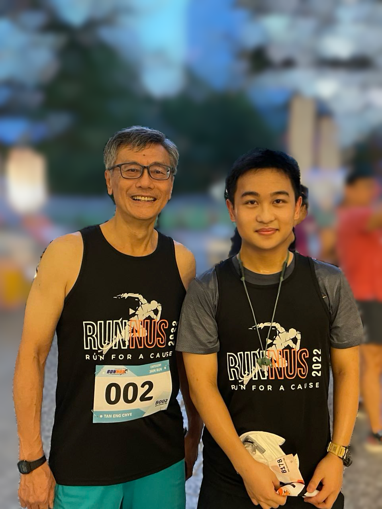

Chen Guoyi
Research Assistant
School of Computing
National University of Singapore
I am a computer engineering student and researcher driven by a simple but persistent question: how can intelligent systems help us understand, support, and improve the real world?
My academic path has been shaped by hands-on engineering, data-driven thinking, and a growing interest in artificial intelligence. I have worked across robotics, large language model applications, control systems, FPGA-based development, and mathematical modeling. These experiences taught me that impactful AI is not only about algorithms, but also about building systems that are reliable, adaptable, and useful in practice.
I am particularly interested in the intersection of artificial intelligence, robotics, embodied AI, and continual learning. Looking ahead, I hope to build intelligent systems that can learn from changing environments, collaborate with humans, and address meaningful problems in science, education, healthcare, and everyday life.
Research Interests
My research interests center on data-driven intelligence and its real-world applications. I am interested in how AI systems can perceive complex environments, reason over information, adapt to new situations, and support human decision-making.
- Artificial Intelligence and Machine Learning
- Robotics and Embodied AI
- Continual Learning and Adaptive Systems
- Large Language Model Applications
- Data-driven Modeling and Real-world Decision Making
Selected Directions
In robotics, I am interested in building systems that connect perception, control, and decision-making, enabling machines to interact more effectively with the physical world.
In artificial intelligence, I am exploring how models can become more editable, trustworthy, and useful after deployment. I am especially interested in systems that can continuously improve while remaining auditable and aligned with human needs.
More broadly, I hope to develop computational tools that translate data into insight and insight into action. My long-term goal is to contribute to AI technologies that are not only powerful, but also responsible, interpretable, and beneficial to society.
Education
- Science & Technology Undergraduate Scholar, Ministry of Education, Singapore
- B.Eng. (Hons.) in Computer Engineering, National University of Singapore
- Second Major in Data Analytics
- Specialization in Robotics
Service and Leadership
I have served as a Teaching Assistant for undergraduate courses in computer engineering, robotics, deep learning, and real-time operating systems at the National University of Singapore. Through teaching, I enjoy helping students build confidence in technical subjects and connecting abstract concepts with practical engineering experience.
Beyond academic service, I served as Captain of TeamNUS Cross-Country and Head of the Executive Committee of NUS Cross-Country. These experiences shaped my understanding of teamwork, discipline, resilience, and leadership under pressure.
Beyond Research
Outside research and engineering, I enjoy hiking and amateur radio. You can call my station on shortwave using the callsign BG5ALI; I am always happy to exchange QSL cards with fellow radio operators.
I am also a trained first aider with the Red Cross Society of China. This experience reflects my belief that knowledge and skills should be used to help others, especially when timely action can make a meaningful difference.